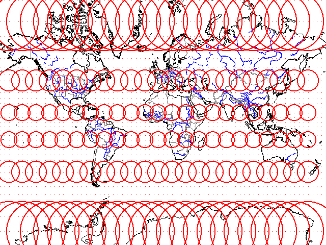
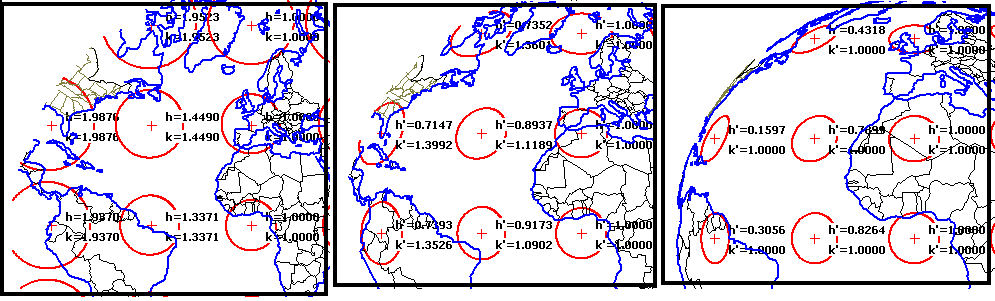

Tissot Indicatrices
The Tissot indicatrix shows the deformation for a map projection. It takes a small circle on the earth's surface, and projects that circle on the map projection. You should look at two things:
A map cannot be both conformal and equal area. If you have a large scale map of a small area, it may be "almost perfect" and it may not be apparent which of the two properties is correctly preserved and which is slightly distorted. This is the goal of a lot of projections, to be close enough that distances, areas, and shapes can all be measured easily. As the area mapped gets larger, and the map scale smaller, this becomes increasingly impossible and you must make decisions and compromises.

Tissot indicatrices on conformal Mercator projection.
 |
Three planar projections, which map half of the earth onto a circle, with the Tissot indicatrices and the
values of h and k. The h and k values measure the distortion in two
directions, stretching or squeezing. Two have h' and k', indicating that there is
angular distortion as well.
|
You can also look at where the values change. For example, for the commonly used map projections:
In a Mercator map, the h and k values will be the same along parallels, because of how the cylinder is oriented prior to being unrolled, tangent to the equator.
In a UTM map, the h and k values will be the same along the central meridian, where it will be 0.9996. This is because the cylinder is transverse, touching the earth along a central meridian, or a uniform distance away from there. The cylinder is actually secant at two arcs on either side of the central meridian, but those arcs are neither parallels nor meridans. If you rotated the coordinates by 90 degrees (the transverse in the projection name), values of h and k would be the same along the "rotated parallels".
Conic projections, Albers and Lambert, will have the same values for h and k at every point on a parallel, with the values increasing away from the standard parallel. They will look virtually identical (the differences are too hard to see with the naked eye, but will be apparent if you look at the h and k values, and should be apparent with only two decimal places. For the conformal Lambert conic, h and k will be the same, while for the equal area Albers, either h or k will be greater than 1, and the other will be less than 1 (their product will be approximately 1, to preserve areas).
In MICRODEM, overlay Tissot indicatrices from the Cartography menu choice of a map menu. You must have the cartography options enabled on the options form.
Tissot references and extensions
https://arxiv.org/abs/2102.08176 Flat Maps that improve on the Winkel Tripel, suggesting azimuthal equidistant is the "best" projection
Last revision 1/5/2019